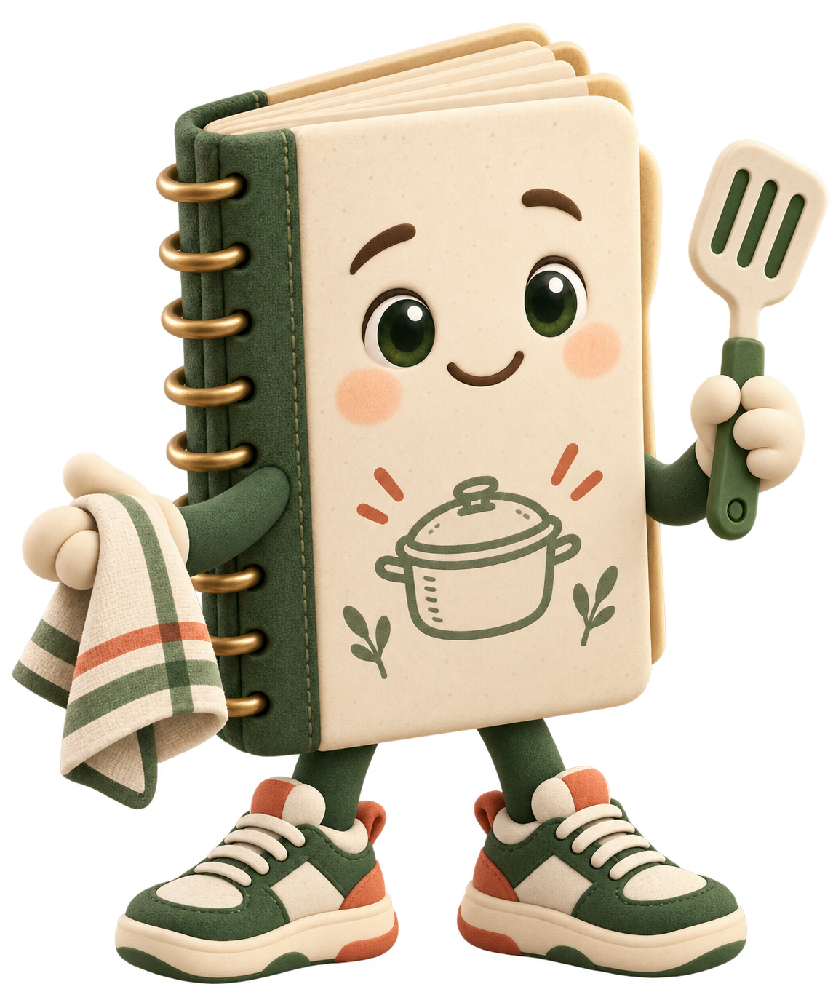
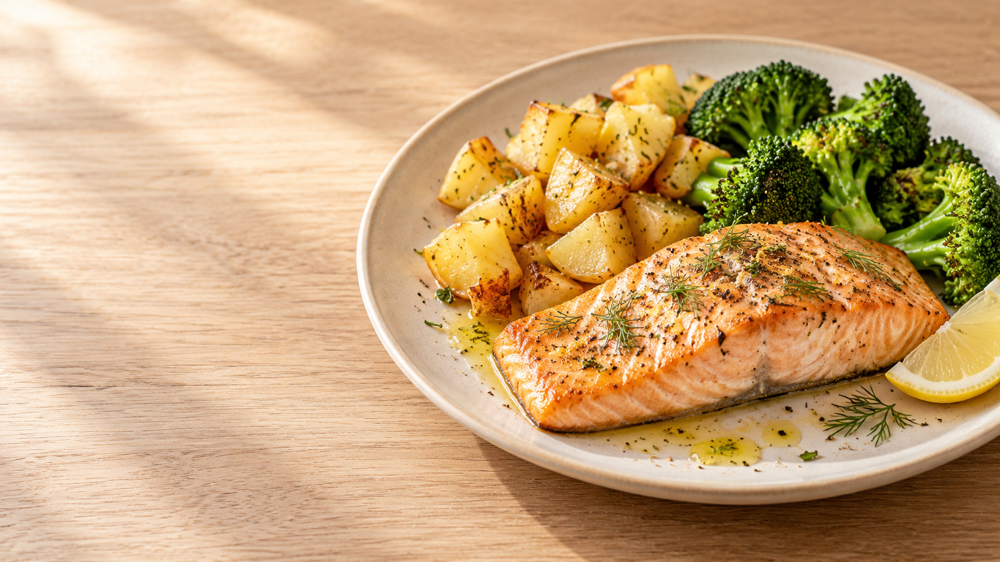

DesayunoYogur con fruta
ComidaArroz con pollo
CenaMerluza con verduras
Vista de ejemplo+ 2 comidas más
COME BIEN. DECIDE MENOS.
Menús de 3 semanas, recetas de 20-30 min y compra organizada en un solo lugar.
Olvidate de hacer la lista de la compra.

TU SEMANA, SIN IMPROVISAR CADA DÍA
El menú, las recetas y la compra siguen el mismo plan para que siempre sepas cuál es el siguiente paso.
Consulta qué toca cada día y prepara el siguiente ciclo cuando se acerque el final de tus tres semanas.
La lista se calcula desde tu menú y tiene en cuenta lo que ya anotaste en la despensa.
Sigue ingredientes, cantidades y pasos; registra cada comida al terminar y la actividad después de realizarla.
QUÉ PUEDES HACER CON MENUKI
Al terminar tus 21 días, prepara el ciclo siguiente. Tu perfil ajusta objetivos y raciones; la actividad real recalcula las comidas pendientes de ese día.
Empieza con MenukiConsulta cinco momentos de comida al día y navega por semanas y fechas.
Ingredientes, cantidades y pasos; los platos principales suelen rondar los 20–30 minutos.
La lista se genera a partir del menú y descuenta lo que ya tienes en despensa.
Anota existencias y revisa qué falta para preparar cada receta.
Elige mantener peso, recomposición, bajar grasa o ganar músculo. Menuki estima kcal y macronutrientes con sexo, edad, altura, peso y movimiento habitual; adapta las raciones si activas esa opción.
Registra la sesión al terminar. Menuki estima el gasto según tipo e intensidad, duración y peso; lo suma al objetivo de ese día y ajusta solo las comidas pendientes. Consulta tu evolución de peso.
Menuki genera una propuesta para las tres semanas siguientes. Guárdala tal cual o personaliza las comidas con recetas del catálogo, bloquea tus favoritas y regenera el resto.
Continúa desde el móvil o el ordenador con conexión a Internet.
Al activarla, las nuevas propuestas favorecen recetas con alimentos catalogados como fuentes de calcio y vitaminas D y C. Es una orientación, no un tratamiento ni una promesa de acelerar la consolidación.

PLATO DEL CATÁLOGO · 25 MIN · FOTO ILUSTRATIVA
Una comida completa, con ingredientes claros y pasos sencillos para resolver el plato de hoy.
PARA DÍAS CON POCO TIEMPO
Menuki es para quien quiere comer bien sin decidir desde cero qué cocinar cada día. Abres el plan, ves la receta y te pones a cocinar.
PREGUNTAS FRECUENTES
Para quien quiere organizar mejor sus comidas, tiene poco tiempo o está cansado de pensar cada día qué cocinar. Menuki deja el menú y el siguiente plato a mano.
Los platos principales del catálogo suelen tener un tiempo estimado de 20–30 minutos. Desayunos y tentempiés suelen llevar menos; el tiempo real puede variar según los ingredientes y el equipo.
Menú de tres semanas, recetas con ingredientes y pasos, lista de compra, control de despensa, ajuste aproximado de porciones y seguimiento de comidas, actividad y peso.
Cuando se acerca el final del ciclo, Menuki genera una propuesta para los siguientes 21 días. Puedes guardarla tal cual o personalizar cada comida con recetas del catálogo; bloquea las que quieras mantener y regenera solo las demás. El nuevo menú empieza en la fecha prevista.
Estima tus necesidades con el sexo de la ecuación (o un gasto en reposo que introduzcas), edad, altura, peso, movimiento habitual y objetivo. Puedes elegir mantener peso, recomposición (reducir grasa y conservar músculo), bajar grasa o ganar músculo. Si activas el ajuste automático, adapta las cantidades de algunos ingredientes. Son estimaciones, no mediciones exactas.
Al preparar o regenerar un menú, favorece de forma cualitativa recetas con alimentos catalogados como fuentes de calcio, vitamina D y vitamina C. No calcula esos micronutrientes, no sustituye la orientación profesional ni promete acelerar la consolidación; el menú activo no cambia al activar la opción.
Registra la sesión después de hacerla. Menuki estima el gasto según actividad e intensidad, duración y peso; lo suma al objetivo energético de esa fecha y recalcula principalmente las raciones de las comidas que aún no has registrado. Las comidas ya registradas y los días futuros no cambian.
Sí. Entra con la misma cuenta y tus datos se sincronizan entre dispositivos cuando hay conexión.
Sí. Puedes enviar ideas desde la app; se revisan antes de incorporarlas al catálogo de recetas.
No. El menú es una planificación; registra una comida cuando ya la hayas terminado. Así el progreso y el consumo de ingredientes reflejan lo que realmente hiciste.
EMPIEZA A TU RITMO